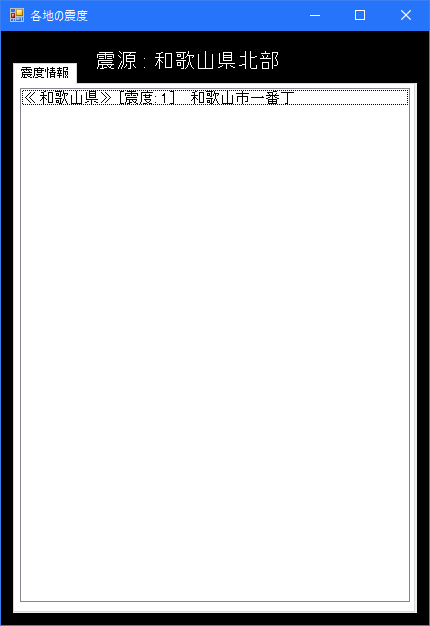

EqClock
Earthquake Clock Software
このソフトはP2P地震情報から取得した地震情報を表示する時計ソフトです。
このソフトではデジタル時計やアナログ時計・地震情報が確認できるソフトで配信などにご利用いただけます。
ソフトの写真
メインウインドウ

各地の震度ウインドウ

アプリ情報
- バージョン：EqClock Ver：1.0.0
- リリース：2023年11月08日
- 地震情報取得元：P2P地震情報JSON API v2
- 開発名：EqClock for yuminQuakelive.
- 開発者：ゆっくりねい
ダウンロード
Ver：1.0.0
EqClockをダウンロード